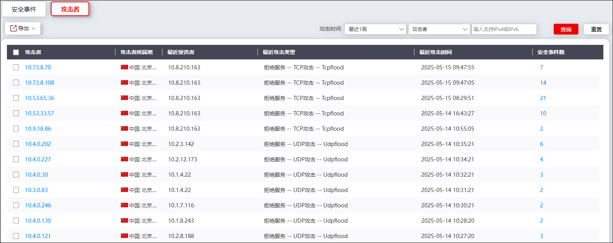
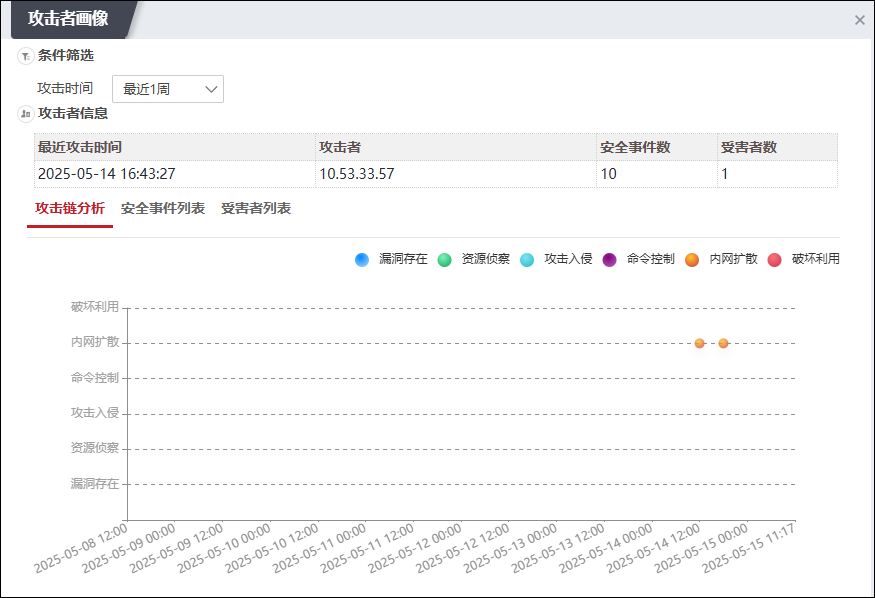
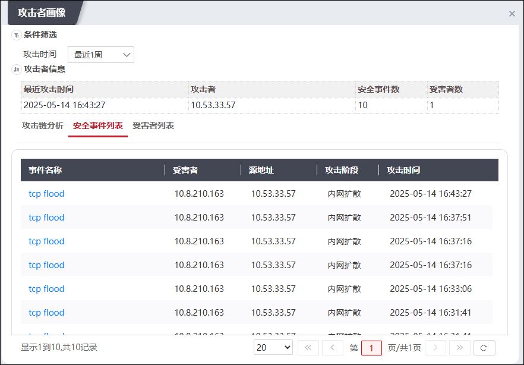
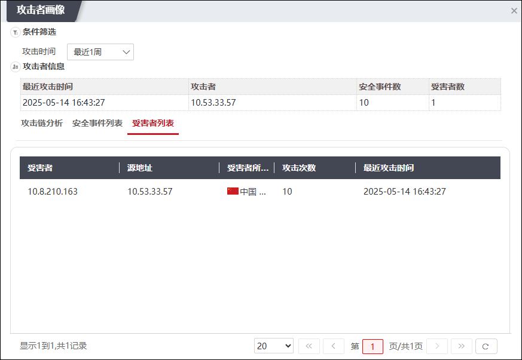
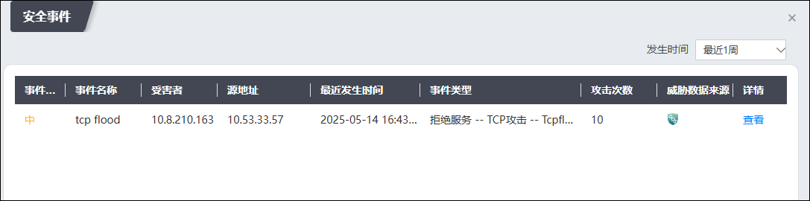
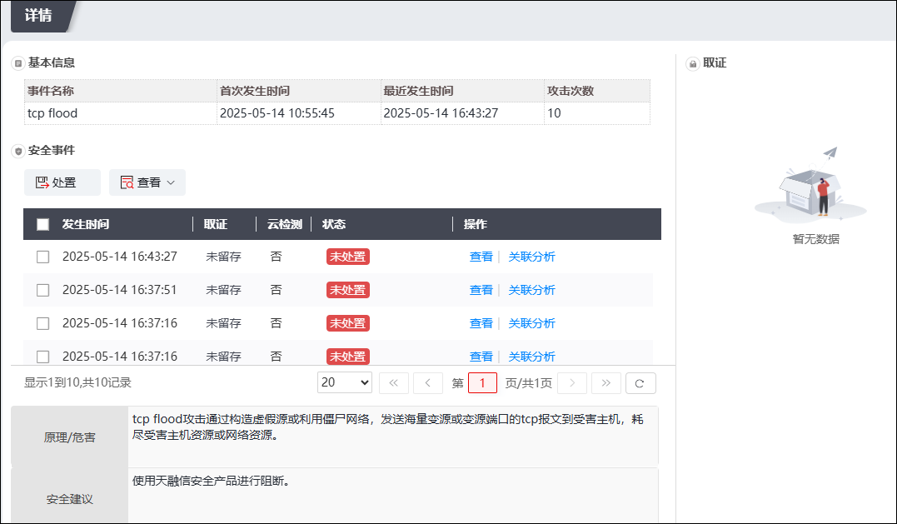
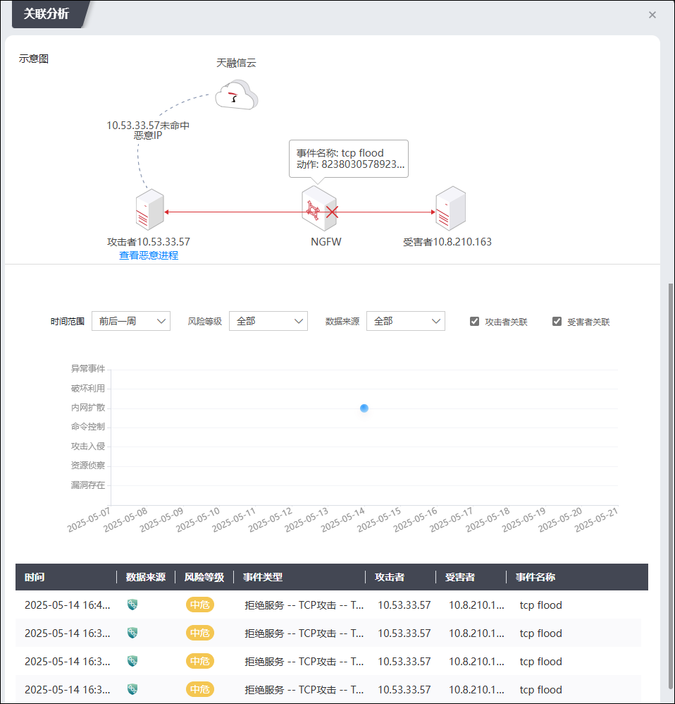

此模块以攻击者视角展示相关威胁详情，管理员可查看攻击者画像、处置威胁。
攻击者模块的相关操作如下。
| 步骤1 | 选择 ，默认进入“攻击者”页面，如下图所示。 |

界面默认展示最近1周的威胁统计信息，支持切换“最近1小时/最近1天/最近1周/最近1月”。管理员可以在界面右上角的查询区支持结合攻击者或受害者的IPv4/IPv6地址进行搜索。
| 步骤2 | 查看攻击者画像 |
1）点击“攻击者”列数据，弹出“攻击者画像”页面，如下图所示。

界面默认展示最近1周（点击攻击时间下拉框可选择时间范围，包括：最近1小时、最近1天、最近1周、最近1月，同时，支持自定义时间范围）的攻击者相关信息，包括最近攻击时间、安全事件数和受害者数等；页面下方展示攻击链分析信息，鼠标悬停在对应色块时，可查看时间、攻击阶段和安全事件的详细信息。
2）激活“安全事件列表”页签，如下图所示。

界面展示了该攻击者关联的事件信息，包括受害者、源地址、攻击阶段和攻击时间等，点击对应“事件名称”可跳转至安全事件详情页面。
3）激活“受害者列表”页签，如下图所示。

界面展示了该攻击者关联的受害者信息，包括受害者、源地址、受害者所属地、攻击次数等。
| 步骤3 | 查看攻击者关联安全事件并进行处置 |
1）点击“安全事件数”列数据，弹出“安全事件”页面，如下图所示。

管理员可以在此界面查看攻击者关联的安全事件信息，包括事件级别、名称、受害者、事件类型、攻击次数和威胁数据来源等。
2）点击某安全事件对应“详情”列“查看”，弹出“详情”页面，如下图所示。

管理员可以在此界面查看安全事件详情并进行处置，处置动作包括：忽略、误报、加入白名单、加入黑名单、修改访问控制、修改防护对象和修改策略模板。说明：当安全事件命中IPS或WAF规则时，系统自动关联规则库中相关原理/危害、安全建议，便于管理员进行分析、处置。
点击“查看”可以查看安全事件对应产生的日志，点击“关联分析”可以查看NGFW对该安全事件的关联分析结果，界面如下图所示。（此处还可以还可通过选择攻击者关联、受害者关联进一步查找和汇总攻击事件，为攻击链提供支持，帮助运维人员更好的排查事件误报和定位原因。）

| 步骤4 | 导出数据 |
导出指定数据：勾选所需导出数据，点击“导出”并选择“导出选择项”即可。
导出当前页数据：点击“导出”并选择“导出当前页”即可。
导出全部数据：点击“导出”并选择“导出全部”即可。